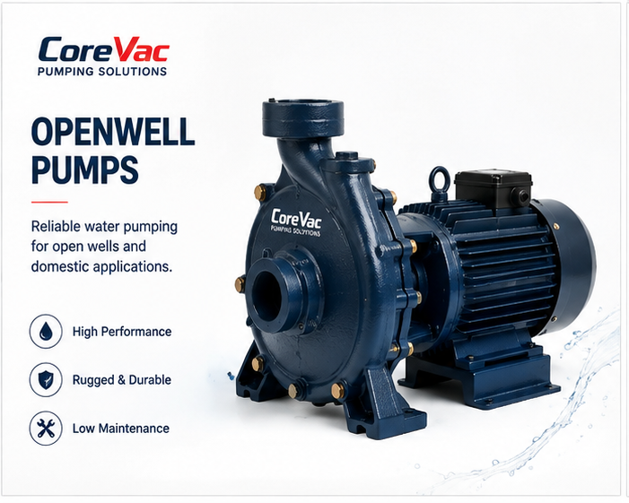

01
DOMESTIC PUMPS
Openwell Pumps
Designed for reliable water pumping from open wells and suitable for a range of domestic and general water-transfer applications.
Reliable water delivery
Domestic applications
Practical operation
Enquire About This Product →